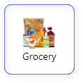

<ion-header>
	<!-- <ion-toolbar>
		<ion-title>dashboard</ion-title>
	</ion-toolbar> -->
	<ion-toolbar>
		<ion-searchbar showCancelButton="focus" placeholder="Search Location" class="search-bar-cls location-search">
		</ion-searchbar>
		<ion-buttons slot="primary">
			<ion-button (click)="onClickNotification()">
				<ion-icon slot="icon-only" name="notifications-outline"></ion-icon>
			</ion-button>
		</ion-buttons>
	</ion-toolbar>
</ion-header>

<ion-content class="ion-padding-horizontal">

	<ion-searchbar showCancelButton="focus" placeholder="Search Restaurant" class="search-bar-cls"></ion-searchbar>

	<ion-grid>
		<ion-row class="ion-align-items-center">
			<ion-col size="4">
				<ion-button shape="round" [ngClass]="filterTab === 'open' ? 'active' : 'txt-cls'"
					(click)="onClickTabs('open')">
					<ion-icon slot="start" name="time-outline"></ion-icon>
					Open
				</ion-button>
			</ion-col>
			<ion-col size="4">
				<ion-button shape="round" [ngClass]="filterTab === 'near' ? 'active' : 'txt-cls'"
					(click)="onClickTabs('near')">
					<ion-icon slot="start" name="navigate"></ion-icon>
					Near
				</ion-button>
			</ion-col>
			<ion-col size="4">
				<ion-button shape="round" [ngClass]="filterTab === 'rating' ? 'active' : 'txt-cls'"
					(click)="onClickTabs('rating')">
					<ion-icon slot="start" name="star"></ion-icon>
					Rating
				</ion-button>
			</ion-col>
		</ion-row>
	</ion-grid>

	<ion-list>

		<ion-item lines="none" class="restaurant-tem-cls ion-margin-bottom" *ngFor="let num of [1,2,3,4,5]"
			(click)="onCLickItem()">
			<ion-avatar slot="start" class="image-container">
				
				<app-rating class="rating-container" [rating]="rating" [isDisabled]="false"
					(ratingChange)="ratingChange($event)">
				</app-rating>
			</ion-avatar>
			<ion-label>
				<p class="header-cls">Vaishali Restaurant</p>
				<p class="text-cls">Famous FOr South Indian Food</p>
				<p class="text-cls">Ekbote Colony, Gorpade Peth Pune</p>
				<p class="text-cls">10KM away</p>
				<div class="rater-cls">
					<span *ngIf="isOpen" class="open">Open</span>
					<span *ngIf="!isOpen" class="open">Close</span>
					<span class="close-time-cls ion-margin-start text-cls">Closes 10PM</span>
					<div class="call-dir-cls" slot="end">
						<ion-icon name="call" (click)="onClickCall($event)"></ion-icon>
						<ion-icon name="navigate" class="ion-margin-start" (click)="onClickCall($event)"></ion-icon>
					</div>
				</div>
			</ion-label>
		</ion-item>
	</ion-list>

</ion-content>